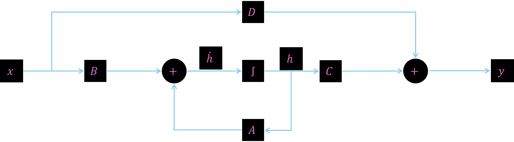

An essay on differential equations, capacitors, and the rebirth of the musical soul
The music world is currently looking at Artificial Intelligence with a mixture of paralyzing fear and vocal distrust. We see massive server farms owned by tech giants sucking up terabytes of human creativity just to churn out audio tracks on an assembly line. It feels like the ultimate victory of the digital robot over the human spirit.
Yet, in the shadow of these giant cloud AIs, a technological revolution is brewing that hardly anyone has on their radar. A revolution driven by two things that could not be more opposite: a mathematical formula called the SSM (State-Space Model) and a return to analog hardware.
When these two worlds merge, they do not create a threat to indie musicians. They create the most powerful tool for creative freedom and independence we have ever seen.
The Intellectual Short-Circuit and Guitar Feedback

Julia explains SSM equations
When people in computer science talk about modern AI, the formula = Ah + Bx quickly enters the conversation. For 98% of people, this is the exact moment the brain scrambles for the emergency exit. It is a differential equation with matrices, for most, the ultimate mathematical final boss.
The problem with this equation is that it contradicts our linear way of thinking. It states: The current state of a system determines the speed of its own change. It is a chicken-and-egg endless loop.
Yet, every musician understands this principle intuitively. It is exactly the same phenomenon as audio feedback in front of a cranked tube amplifier.
The sound coming out of the speaker right now (the state) causes the guitar strings to vibrate, which changes the sound in the next fraction of a second (the derivative of the state). The system feeds itself. It flows.
And that is precisely the secret of these new music AIs. They no longer stubbornly read music note-by-note like a robot reading a piece of paper. They resonate with it.
The Architectural Blueprint: The Two Pillars of the SSM
To understand how this mathematical resonance operates under the hood, we must look at the two explicit equations that define any State-Space Model. They split the universe of the system into what is happening invisibly on the inside, and what we actually get to hear on the outside.
The State Equation (The Inner Dynamics)
This is the continuous engine of the model. Here, h(t) represents the latent state, the hidden, internal memory of the system at any given timestamp t. The term or is the time derivative, representing the immediate rate of change of that memory. This equation dictates how the system dynamically updates its own internal momentum based on where it currently stands Ah(t) combined with the fresh external stimulus Bx(t) crashing into it.
The Output Equation (The Sonic Manifestation)
While the state equation brews in the background, the output equation maps that hidden world back into reality. It calculates the visible, acoustic output y(t) at any exact moment. It proves that what we hear is a combination of the system's internal processing Ch(t) and a potential direct feedthrough of the original input signal Dx(t).
Together, these two equations form a flawless bridge from cause to effect, mimicking the physical laws of nature.
The Band Inside the Silicon Mixer

SSM Diagram
In this mathematical world, there are four letters that control the entire system: A, B, C, and D. To a mathematician, these are matrices. To us musicians, it is the perfect signal flow of a live concert:
- Input x: The input is the score coming in from the outside. Matrix B decides how sensitively the instruments jump to that stimulus.
- Matrix B: Matrix B decides how sensitively the instruments jump to the stimulus of the input.
- Matrix A: (The Resonance and the Memory): This is the core. Matrix A describes the invisible web of relationships within a band.
- Matrix C: (The Mixing Console): It takes this invisible, inner vibe of the band and mixes it down for the listener in the room.
- Matrix D: (The Bypass / The Singing Crowd): The direct channel. Like fans in a stadium shouting along to a catchy melody instantly and without detours, Matrix D patches a portion of the input directly through to the output.
- Output y: The output is the final result of the system's response to the input.
Beyond Time Slices: When Code Becomes Electricity Again
Many indies fear that AI music devalues the art form. But anyone listening to current digital models quickly realizes: They are by no means soulless or sterile. On the contrary, they generate music of breathtaking emotionality and complexity. Their only real limitation is the very nature of digital technology itself: time slicing. Digital systems must chop time into rigid, microscopic intervals and compute every single moment step-by-step. It is like a high-resolution, digital flipbook.
The new analog SSM models don't change the quality of the art, but rather the foundation upon which it is built: they liberate music from the corset of time slices
Instead of painstakingly chopping equations into ones and zeros on conventional computers, which generates massive power consumption and dreaded latency, modern analog AI chips let physics do the work.
Matrix A is no longer program code, but a microscopic grid of adjustable electrical resistors. And the state of the AI? It is stored as actual electrical charge inside tiny capacitors. Because they run on actual capacitors, the electrical charge flows absolutely continuously and seamlessly, exactly like a real sound wave in the air or the current in an analog synthesizer.
The Liberation of the Indies: Music History in a Backpack
What does this elite cutting-edge research actually mean for the indie musician in a home studio? It means the end of technical and financial shackles.
Until now, high-end production meant either having the budget for expensive studios or paying monthly subscriptions to tech giants to use their cloud AIs. With analog SSM chips, the entire history of music moves right into your laptop, locally, offline, and ice-cold, without draining your battery.
In the future, we won't be downloading gigabytes of static, sterilely recorded audio files (samples). We will download the physical DNA of music history. We will load the learned matrices of a legendary 1973 studio, the physics of an analog synth, or the biological resonance structure (the virtual larynx) of a fantastic soul singer onto our analog chip.
When we press a key, the hardware calculates in real time how the current must flow through the capacitors. Because the hardware operates analogously, it is susceptible to tiny thermal fluctuations. No two keystrokes ever sound exactly the same. The AI gets a soul. It becomes a real, unpredictable, living instrument.
The Bottom Line: A New Instrument, Not a Replacement
The new wave of analog state-space models will not take away our creativity. It will democratize it. It gives the singer-songwriter on stage a virtual backing band that reacts to every nuance of their performance in real time without latency. It gives the bedroom producer the acoustic power of Hollywood.
We shouldn't fear this future. We should shape it. Because at the end of the day, the most complicated differential equation in the world is just one thing:
A beautifully built analog mixing console
Waiting for us to turn it up